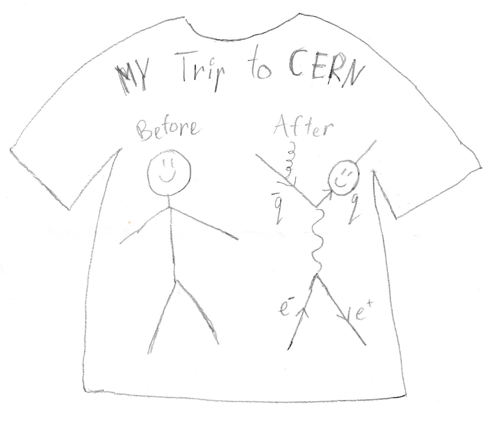

Hi! I'm Saskia, a Beamline for Schools alumna, and this is a website for anyone interested in particle physics.
I decided to compile these materials, because
- this knowledge is often difficult to come across on the internet
- or the concepts are explained exclusively at a graduate school level
- this also helps me gain a more peripheral view on these concepts.
Anyways, I hope you find something insightful. This is also meant to serve as a little roadmap to BL4S, so I've included a few blog posts in the A Few Stories section. Enjoy!
Last Updated:
